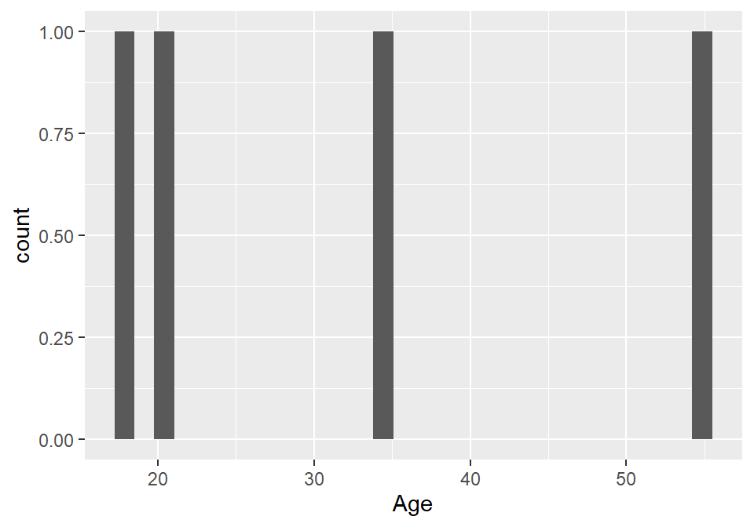
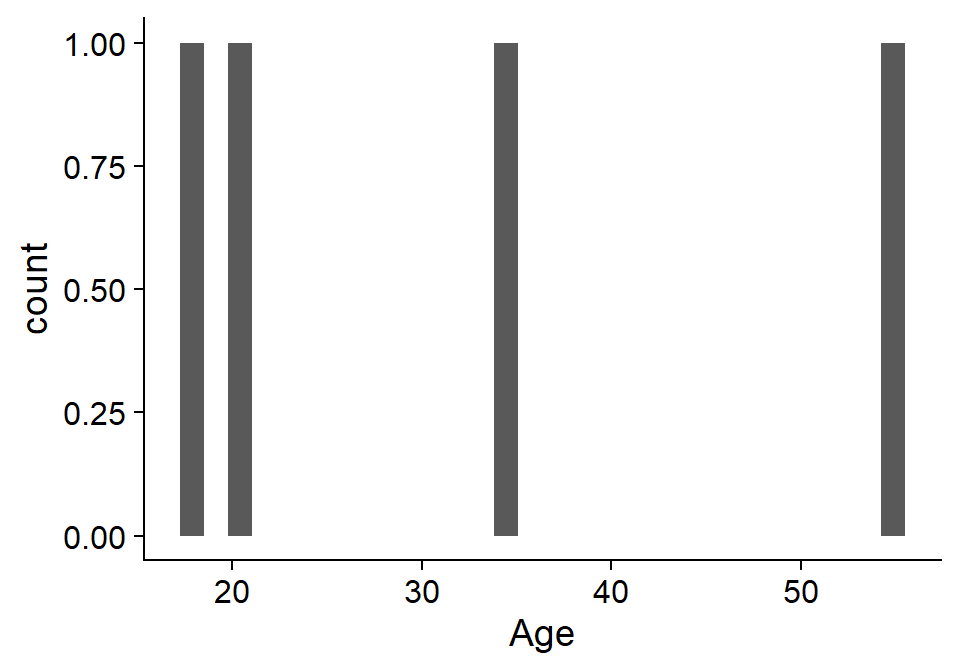
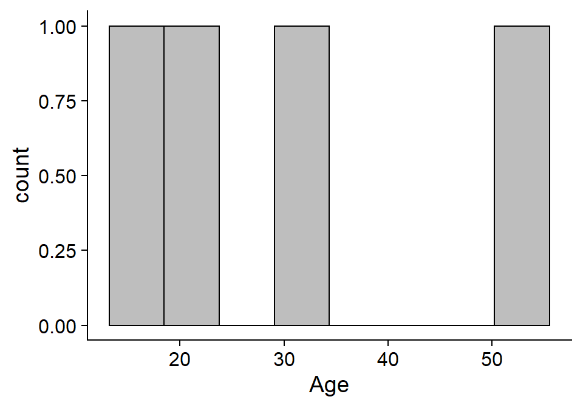
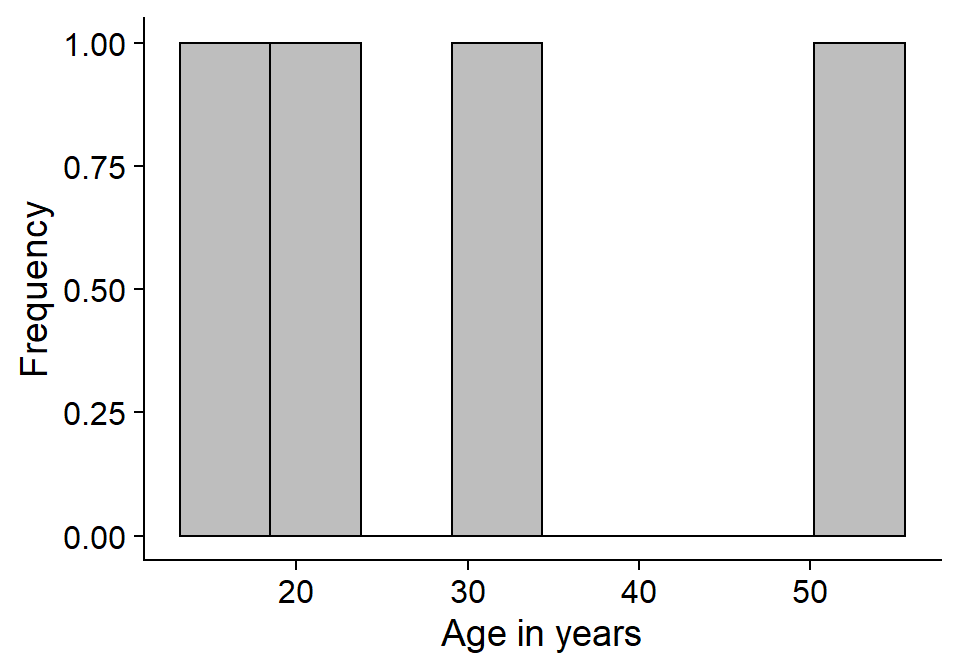
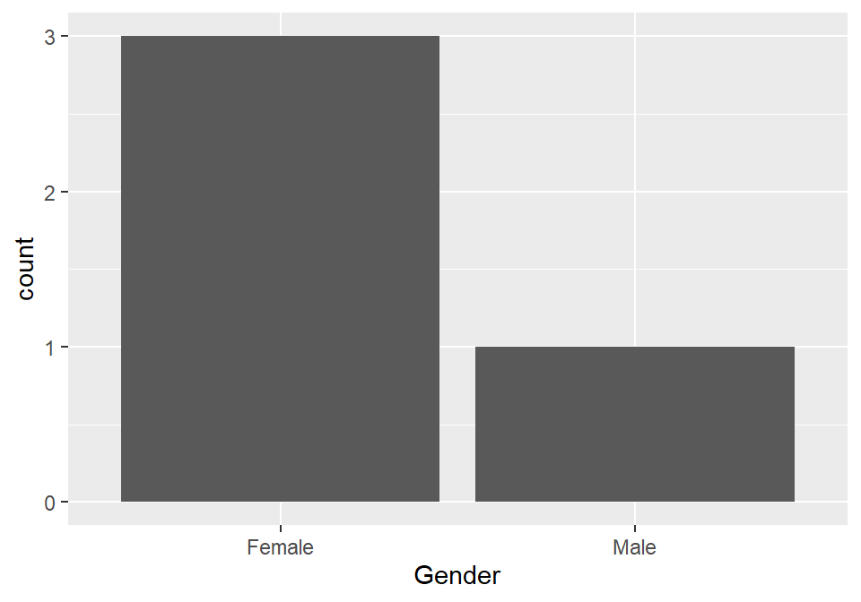
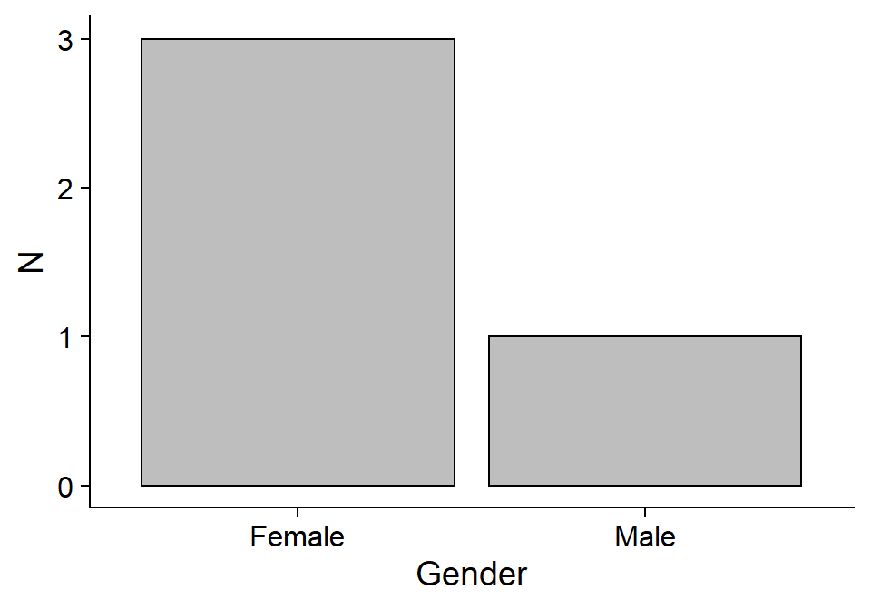
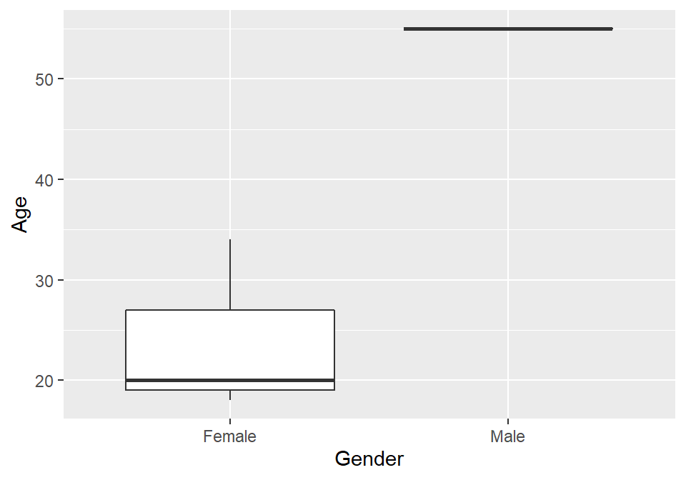
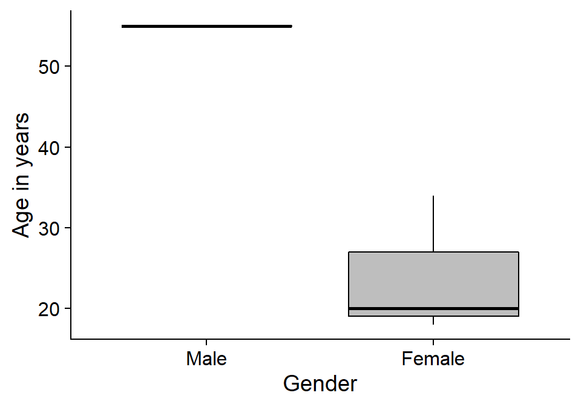

First of all, let’s make sure we’re all set up:
read_csv() function comes from the tidyverse package. What do we need to do before we can run the command above?Let’s read the data into RStudio so that we can start working with them
gensex %>% str()
Classes 'spec_tbl_df', 'tbl_df', 'tbl' and 'data.frame': 4 obs. of 12 variables:
$ Age : num 34 55 18 20
$ Gender : chr "Female" "Male" "Female" "Female"
$ Gender_comfortable_1: num 8 8 9 4
$ Gender_masc_1 : num 3 8 1 5
$ Gender_fem_1 : num 7 8 9 6
$ Gender_stability_1 : num 8 4 9 3
$ Sexual_strength_1 : num 9 6 9 2
$ Sexual_fewq_1 : num 8 1 9 2
$ Sexual_gender_1 : num 5 6 9 4
$ Romantic_strength_1 : num 9 6 9 5
$ Romantic_freq_1 : num 3 2 9 5
$ Romantic_gender_1 : num 5 7 9 5
- attr(*, "spec")=
.. cols(
.. Age = col_double(),
.. Gender = col_character(),
.. Gender_comfortable_1 = col_double(),
.. Gender_masc_1 = col_double(),
.. Gender_fem_1 = col_double(),
.. Gender_stability_1 = col_double(),
.. Sexual_strength_1 = col_double(),
.. Sexual_fewq_1 = col_double(),
.. Sexual_gender_1 = col_double(),
.. Romantic_strength_1 = col_double(),
.. Romantic_freq_1 = col_double(),
.. Romantic_gender_1 = col_double()
.. )gensex <- gensex %>%
mutate(Gender = factor(Gender))
gensex %>% str()
Classes 'spec_tbl_df', 'tbl_df', 'tbl' and 'data.frame': 4 obs. of 12 variables:
$ Age : num 34 55 18 20
$ Gender : Factor w/ 2 levels "Female","Male": 1 2 1 1
$ Gender_comfortable_1: num 8 8 9 4
$ Gender_masc_1 : num 3 8 1 5
$ Gender_fem_1 : num 7 8 9 6
$ Gender_stability_1 : num 8 4 9 3
$ Sexual_strength_1 : num 9 6 9 2
$ Sexual_fewq_1 : num 8 1 9 2
$ Sexual_gender_1 : num 5 6 9 4
$ Romantic_strength_1 : num 9 6 9 5
$ Romantic_freq_1 : num 3 2 9 5
$ Romantic_gender_1 : num 5 7 9 5summary()Let’s look at the roughest summary of our data
gensex %>% summary()
Age Gender Gender_comfortable_1 Gender_masc_1 Gender_fem_1
Min. :18.00 Female:3 Min. :4.00 Min. :1.00 Min. :6.00
1st Qu.:19.50 Male :1 1st Qu.:7.00 1st Qu.:2.50 1st Qu.:6.75
Median :27.00 Median :8.00 Median :4.00 Median :7.50
Mean :31.75 Mean :7.25 Mean :4.25 Mean :7.50
3rd Qu.:39.25 3rd Qu.:8.25 3rd Qu.:5.75 3rd Qu.:8.25
Max. :55.00 Max. :9.00 Max. :8.00 Max. :9.00
Gender_stability_1 Sexual_strength_1 Sexual_fewq_1 Sexual_gender_1 Romantic_strength_1
Min. :3.00 Min. :2.0 Min. :1.00 Min. :4.00 Min. :5.00
1st Qu.:3.75 1st Qu.:5.0 1st Qu.:1.75 1st Qu.:4.75 1st Qu.:5.75
Median :6.00 Median :7.5 Median :5.00 Median :5.50 Median :7.50
Mean :6.00 Mean :6.5 Mean :5.00 Mean :6.00 Mean :7.25
3rd Qu.:8.25 3rd Qu.:9.0 3rd Qu.:8.25 3rd Qu.:6.75 3rd Qu.:9.00
Max. :9.00 Max. :9.0 Max. :9.00 Max. :9.00 Max. :9.00
Romantic_freq_1 Romantic_gender_1
Min. :2.00 Min. :5.0
1st Qu.:2.75 1st Qu.:5.0
Median :4.00 Median :6.0
Mean :4.75 Mean :6.5
3rd Qu.:6.00 3rd Qu.:7.5
Max. :9.00 Max. :9.0 Age and Gender
id was a required variable, we don’t need to worry about NAsNAsWe can doo all of the above in a single pipeline:
age_desc tibble enables us to report descriptive statistics in text`r age_desc %>% pull(mean)`” in R Markdowngen_age_desc <- gensex %>%
group_by(Gender) %>%
summarise(n = n(),
perc = n()/nrow(gensex) * 100,
mean_age = mean(Age, na.rm = T),
sd_age = sd(Age, na.rm = T)) %>%
modify_if(is.numeric, round, 2)
gen_age_desc
# A tibble: 2 x 5
Gender n perc mean_age sd_age
<fct> <dbl> <dbl> <dbl> <dbl>
1 Female 3 75 24 8.72
2 Male 1 25 55 NA The command returns the following warning:
“Factor Gender contains implicit NA, consider using forcats::fct_explicit_na”
NAsmutate()gen_age_desc <- gensex %>%
mutate(Gender = fct_explicit_na(Gender)) %>%
group_by(Gender) %>%
summarise(n = n(),
perc = n()/nrow(gensex) * 100,
mean_age = mean(Age, na.rm = T),
sd_age = sd(Age, na.rm = T)) %>%
modify_if(is.numeric, round, 2)
gen_age_desc
# A tibble: 2 x 5
Gender n perc mean_age sd_age
<fct> <dbl> <dbl> <dbl> <dbl>
1 Female 3 75 24 8.72
2 Male 1 25 55 NA Tibbles can be turned into nice tables using knitr::kable()
| Gender | n | perc | mean_age | sd_age |
|---|---|---|---|---|
| Female | 3 | 75 | 24 | 8.72 |
| Male | 1 | 25 | 55 | NA |
stringr::str_to_sentence()We can use this function in mutate() to change the first column of our gen_age_desc tibble
gen_age_desc %>%
mutate(Gender = str_to_sentence(Gender)) %>%
kable(col.names = c("Gender", "*N*", "%", "*M*~age~", "*SD*~age~"),
caption = "Table 1 *Descriptive statistics by Gender*")| Gender | N | % | Mage | SDage |
|---|---|---|---|---|
| Female | 3 | 75 | 24 | 8.72 |
| Male | 1 | 25 | 55 | NA |
Let’s look at a simple histogram of our Age variable
gensex %>% ggplot(aes(x = Age)) + geom_histogram()
`stat_bin()` using `bins = 30`. Pick better value with `binwidth`.
gensex %>% summary()
Age Gender Gender_comfortable_1 Gender_masc_1 Gender_fem_1
Min. :18.00 Female:3 Min. :4.00 Min. :1.00 Min. :6.00
1st Qu.:19.50 Male :1 1st Qu.:7.00 1st Qu.:2.50 1st Qu.:6.75
Median :27.00 Median :8.00 Median :4.00 Median :7.50
Mean :31.75 Mean :7.25 Mean :4.25 Mean :7.50
3rd Qu.:39.25 3rd Qu.:8.25 3rd Qu.:5.75 3rd Qu.:8.25
Max. :55.00 Max. :9.00 Max. :8.00 Max. :9.00
Gender_stability_1 Sexual_strength_1 Sexual_fewq_1 Sexual_gender_1 Romantic_strength_1
Min. :3.00 Min. :2.0 Min. :1.00 Min. :4.00 Min. :5.00
1st Qu.:3.75 1st Qu.:5.0 1st Qu.:1.75 1st Qu.:4.75 1st Qu.:5.75
Median :6.00 Median :7.5 Median :5.00 Median :5.50 Median :7.50
Mean :6.00 Mean :6.5 Mean :5.00 Mean :6.00 Mean :7.25
3rd Qu.:8.25 3rd Qu.:9.0 3rd Qu.:8.25 3rd Qu.:6.75 3rd Qu.:9.00
Max. :9.00 Max. :9.0 Max. :9.00 Max. :9.00 Max. :9.00
Romantic_freq_1 Romantic_gender_1
Min. :2.00 Min. :5.0
1st Qu.:2.75 1st Qu.:5.0
Median :4.00 Median :6.0
Mean :4.75 Mean :6.5
3rd Qu.:6.00 3rd Qu.:7.5
Max. :9.00 Max. :9.0 cowplot package contains a nice clean theme for publication-style ggplot() plotscowplot, we can add theme_cowplot() to our plot to make it look a little bettergensex %>% ggplot(aes(x = Age)) + geom_histogram() + theme_cowplot()
`stat_bin()` using `bins = 30`. Pick better value with `binwidth`.
bins=color= for outline of the barsfill= for colour of the bars themselvesgensex %>%
ggplot(aes(x = Age)) + geom_histogram(bins = 8, color = "black", fill = "grey") +
theme_cowplot()
gensex %>%
ggplot(aes(x = Age)) + geom_histogram(bins = 8, color = "black", fill = "grey") +
labs(x = "Age in years", y = "Frequency") + theme_cowplot()
Gender) on a barchart
Gender variablestr_to_sentence())fct_infreq() function to the mutate() commandLet’s tweak the appearance of our plot using what we already know
gensex %>%
mutate(Gender = str_to_sentence(Gender),
Gender = fct_infreq(Gender)) %>%
ggplot(aes(x = Gender)) + geom_bar(color = "black", fill = "grey") +
labs(x = "Gender", y = "N") + theme_cowplot()
aes()

We can re-use essentially all the commands from our previous plot to make this boxplot by group a little nicer
gensex %>%
mutate(Gender = str_to_sentence(Gender),
Gender = fct_rev(Gender)) %>%
ggplot(aes(x = Gender, y = Age)) + geom_boxplot(color = "black", fill = "grey") +
labs(x = "Gender", y = "Age in years") + theme_cowplot()
Data from 4 first year Psychology students at the University of Sussex (Mage = 31.75, SDage = 17.06) were collected anonymously as part of the Analysing Data module.
Participants filled in a questionnaire hosted via Qualtrics. The form was accessed using a URL given in lecture. The questionnaire contained ten Likert-type items on topics relating to gender and sexuality. Data on participants’ own age and gender were also collected. The age breakdown by gender is given in Table 1.
| Gender | N | % | Mage | SDage |
|---|---|---|---|---|
| Female | 3 | 75 | 24 | 8.72 |
| Male | 1 | 25 | 55 | NA |